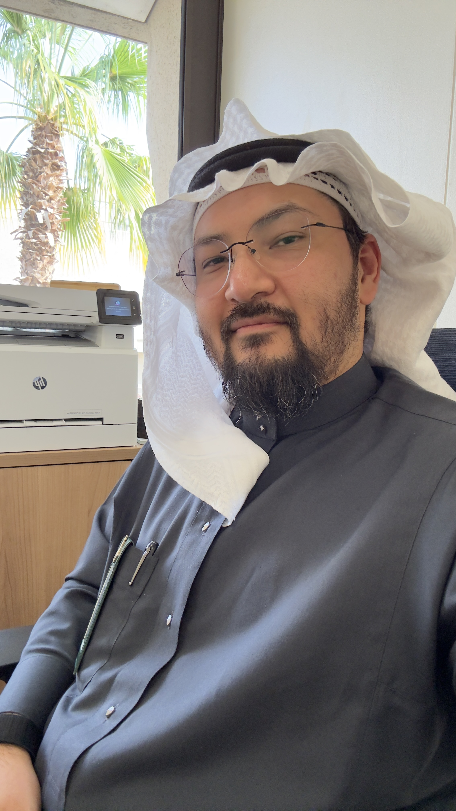

MNTAssistant Professor · King Abdulaziz University, Jeddah
Dr. Majed N. Turkistani
About
Research
Peer-reviewed publications and manuscripts currently under review.
Published Articles
A Cryogenian-Early Ediacaran volcanosedimentary record of glacial deposits in northern Saudi Arabia, Arabian-Nubian Shield
DOI: 10.1111/sed.70002Establishing detailed chemofacies of depositional environments in an epeiric seaway using high-resolution (500 μm) micro X-ray fluorescence core scanning data
DOI: 10.1111/sed.70002Foraminifera and testate amoebae morphogroup analysis and biofacies of the Upper Cretaceous (Turonian) Ferron-Notom Delta, Utah, USA
DOI: 10.1016/j.palaeo.2022.111146Articles Under Review
Diagenesis and Textural Analysis of the Evaporite Succession of the Upper Dafin Formation, Rabigh Area, Saudi Arabia
Micro-XRF analysis of the Upper Cretaceous (Turonian) Caineville North, Ferron-Notom Delta, Utah, USA
Education & Experience
Education
Ph.D. in Paleontology & Stratigraphy
McMaster University, Hamilton, CanadaPaleo-deltaic environments via biostratigraphical and micro-XRF analyses on the Ferron-Notom Delta, Mancos Shale Formation, Central Utah, USA.
M.Sc. in Micropaleontology & Paleoeecology
University of Toronto, CanadaCoccolithophores applied to reconstruct paleoenvironmental conditions of the offshore Pakistan marine environment using 135 core samples.
B.Sc. in Petroleum Geology & Sedimentology
King Abdulaziz University, JeddahGPA 3.8/5. Geology, paleontology, petroleum geology, and statistics. Active participant in departmental geological field trips.
Experience
Assistant Professor of Paleontology & Stratigraphy
King Abdulaziz University, JeddahTeaching, research, and academic leadership. PR & Media Supervisor; President, Saudi Geologic Club; VP of multiple departmental committees.
Lecturer of Paleontology & Stratigraphy
King Abdulaziz University, JeddahDeveloped and delivered curricula; designed field trip experiences; mentored students through independent research projects.
Student Trainee
Saudi Aramco Oil Company, DhahranSummer rotational training program across departments, gaining exposure to petroleum industry workflows.
Teaching
Courses at King Abdulaziz University and selected professional development programs.
Courses at KAU
Professional Development
The University Scholars Fellowship
Jan 2026 – In ProgressDeveloping and conducting a research project based on ideas generated from my field of expertise. The fellowship supports us with a wide range of resources and mentorship to ensure the success of our research project.
Academic Leadership Diploma
Sep 2024 – Dec 2024Completed a leadership diploma. Developed a strategic plan and department-wide action plan, both approved by the departmental council.
Professional Teacher Development Fellowship
Jan 2025 – Aug 2025Developed course blueprints and complete portfolios aligned with international standards for all taught courses.
Academic Service & Leadership
Faculty and student engagement beyond the classroom.
Saudi Geologic Club
Faculty of Earth Sciences · King Abdulaziz University
Founder & President · 2023 – 2025The Saudi Geologic Club promotes and develops members' skills who are interested in various Earth sciences, through a series of workshops and seminars built on local and international standards.
The Saudi Geologic Club aims to be at the forefront of student clubs in qualifying national competencies in the field of Earth Sciences and providing students with skills that suit the job market alongside the Kingdom's Vision 2030, via workshops and seminars that meet global and local standards.
Talks, Seminars & Workshops
Invited talks, seminars, and professional development workshops at universities and academic events.
Field Work Gallery
Photographs from geological field trips, research expeditions, and fieldwork across the USA and Saudi Arabia.
Skills & Languages
Research & Data Science
Teaching & Leadership
Communication & Media
Languages
Contact
Open to research collaborations, visiting scholar opportunities, and academic partnerships.
Faculty of Earth Sciences
King Abdulaziz University
Jeddah 21589, Saudi Arabia